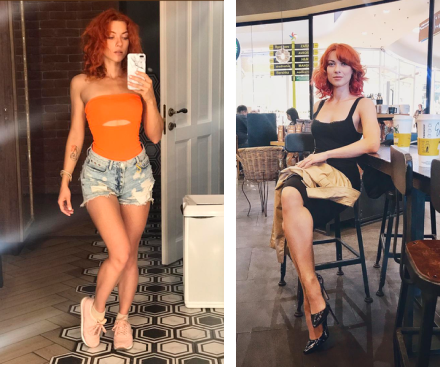

Γεια σας, με λένε Κατερίνα. Είμαι 28 χρονών. Έχω έναν πολύ ενεργό τρόπο ζωής και υποφέρω από το υπερβολικό βάρος (το ύψος είναι 170 και το βάρος 90 κιλά)
Αποφάσισα να κάνω την θεραπεία με τις σταγόνες Fortunella μετά από πρόταση της ξαδέλφης μου. Υπολογίζω για ένα μήνα χρήσης και μετά κοιτάζω τα τελικά αποτελέσματα. Για το καλύτερο αποτέλεσμα, έκανα τα εξής:
• Άλλαξα τη διατροφή μου, τώρα τρώω βραστά ψάρια, άπαχο κρέας, φρούτα, λαχανικά. Αν θέλω γλυκά, τρώω μούσλι ή αποξηραμένα φρούτα σε μικρές ποσότητες.
• Θα αρχίσω να πίνω νερό κανονικά. Θα χρησιμοποιώ καθαρό πόσιμο νερό, δεν θα το αντικαταστήσω με το καφέ ούτε με ανθρακούχα ποτά.
• Θα ξεκινήσω να προπονούμε.
Θα περιγράψω τις μετρήσεις ελέγχου και την ευημέριά μου τους επόμενο μήνα, ελπίζω ότι όλα θα πάνε καλά. Παρεμπιπτόντως, η συσκευασία είναι καινούργα, το Fortunella είναι παρόμοιο με τους λιποδιαλύτες, μόνο που η σύνθεση είναι πολύ πιο χρήσιμη και πιο φυσική.
3249
Ξεκίνησα εδώ και 4 ημέρες να παίρνω τις σταγόνες Fortunella. Φαίνεται ότι είναι σύντομο το χρονικό διάστημα, αλλά ήδη βλέπω αισθητές αλλαγές στο σώμα μου. Έχασα 3 κιλά σε 4 ημέρες και βλέπω πως έγινε χωρίς πολλές προσπάθειες, όπως με δίαιτες και με πολλές προπονήσεις. Τις πρώτες μέρες ήταν δύσκολο να σταματήσω τα αγαπημένα μου φαγητά, αλλά σταδιακά ξεκίνησα να τρώω κανονικά. Πίνω τις σταγόνες σύμφωνα με τις οδηγίες, χωρίς να αύξησω ή να μείωσω τη δοσολογία του συμπληρώματος διατροφής. Με την υγεία δεν είχα κανένα πρόβλημα. Σε αντίθεση με άλλα συμπληρώματα και θεραπείες, δεν ζαλιζόμουν και δεν με πονούσε η κοιλιά μου. Ήδη δεν φαινόταν τόσο πολύ το λίπος στα πλευρά, στη κοιλιά και σταδιακά έφευγε το πρήξιμο.
1280
Κατηγορώ τον εαυτό μου που χαλάρωσα στα γενέθλια της φίλης μου και επέτρεψα στον εαυτό μου να φάω μια σαλάτα κρέατος, τάρτες με σολομό και λίγο καπνιστό λουκάνικο. Σκέφτηκα αμέσως ότι θα πάρω ένα με δύο κιλά, αλλά στη ζυγαριά το αποτέλεσμα ήταν σταθερό πράγμα που με ευχαρίστησε. Έχασα άλλα 4 κιλά με τις σταγόνες Fortunella. Αυτό είναι πραγματικά τέλειο.
Τώρα ζυγίζω 83 κιλά και μου είναι πιο εύκολο για μένα να περπατάω. Προσπάθησα να κάνω κάθε πρωί τζόκινγκ και ανέβαινα τις σκάλες στον 8ο όροφο. Ήταν δύσκολο, αλλά τα κατάφερνα. Το δέρμα μου είναι πιο σφιχτό, η γοφοί μου μίκρυναν, την περιφέρεια της μέσης έγινε πιο λεπτή, το δεύτερο εξαφανιστηκε. Συνεχίζω ακόμα την θεραπεία.
5482
Αυτή τη φορά δεν επέτρεψα στον εαυτό μου να τρώω τα πάντα, ακόμη και στα γενέθλιά μου αρνήθηκα τις λιχουδιές. Πίνω στις σταγόνες Fortunella. Έχω τέλεια διάθεση. Επιπλέον, είχα ελάφρυνση και αυτοπεποίθηση. Αυτή τη φορά το αποτέλεσμα είναι ακόμα πιο δραστικό. Έχασα ακόμα 5 κιλά Παραδόξως, δεν σκέφτηκα καν ότι κάποτε θα ζυγίζω 78 κιλά.
Όσο θυμάμαι πάντα ζύγιζα τουλάχιστον 90-93 κιλά και κάνοντας αυστηρές δίαιτες, τα κιλά που έχανα σε μερικές εβδομάδες επέστρεφαν ξανά στο σώμα μου. Μερικές φορές μπορώ να τρώω σοκολάτες ή τις αγαπημένες μου μπανάνες.
4256
Πέτυχα το στόχο μου. Η ζυγαριά κάθε φορά με κάνει να νιώθω υπέροχα. Τελεια, έχασα και άλλα 4 κιλά! Δύο μήνες πέρασαν μετά την τελευταία μέτρηση που έκανα. Στις αρχές Μαΐου έχασα μέχρι 16 κιλά με τιςκ σταγόνες Fortunella και τώρα είμαι 74 κιλά. Το να πω ότι είμαι σοκαρισμένη δεν σημαίνει τίποτα. Κοιτάζω τις παλιές μου φωτογραφίες και απλά αναρωτιέμαι αν είμαι εγώ στις φωτογραφίες. Τι να πω για τις αλλαγές?
Πρώτον, οι όγκοι μου μίκρυναν πιο πολύ. Η μέση μου έγινε πιο λεπτή, στα πόδια και στα χέρια αδυνάτισα και έφυγε το λίπος απο τους γοφούς μου. Δεν υπήρχε ίχνος από το δεύτερο προγούλι και το οβάλ μου προσώπου διορθώθηκε, έγινε πιο όμορφο, σαν να είχα κάνει ανύψωση περιγράμματος, αν και αυτό δεν έγινε ποτέ. Άλλαξα εντελώς την ντουλάπα μου, πέταξα τα παλιά μου φορέματα, τις μπλούζες και τις φούστες χωρίς δισταγμό. Επιπλέον, κατά τη διάρκεια αυτής της περιόδου η συνολική μου διάθεση βελτιώθηκε σημαντικά. Άρχισα να αρρωσταίνω λιγότερο, τα μαλλιά μου έγιναν πιο ελαστικά, λαμπερά, τα νύχια μου δεν σπάνε, κάτι που ήταν μεγάλο πρόβλημα για μένα. Προς το παρόν, με ευχαριστούν απόλυτα τα κιλά μου

6062


Σχόλια
Αποστολή μηνύματος
Πραγματικά βοηθάει στον έλεγχο του βάρους. Σε μένα τις σταγόνες Fortunella τις παρήγγειλε η μητέρα μου, φυσικά και με στεναχώρησε που είπε να χάσω κιλά, αλλά νομίζω πως γι 'αυτό με χώρισε ο άντρας μου. Ζύγιζα 85 κιλά. Κοίταξα τον εαυτό μου στον καθρέφτη και είδα ότι η κοιλιά μου έγινε μεγαλύτερη και εμφανίστηκε η κυτταρίτιδα. Το ύψος μου είναι 175 εκατοστά και το επιπλέον βάρος είναι ακόμη αισθητό. Πήρα τις σταγόνες για δύο μήνες και ως αποτέλεσμα έχασα 12 κιλά. Τώρα είμαι σε φόρμα!
ΑπάντησηΣοφία Δεν είναι το ίδιο για όλους. Προσωπικά δεν με βοήθησε, τις έπαιρνα για μια εβδομάδα και μετά τις σταμάτησα. Έχασα δύο κιλά και αυτό ηταν όλο. Πού είναι η μεγάλη διαφορά?
ΑπάντησηΣυντονιστής Δημήτρης Γειά σας. Σας ευχαριστούμε για το μήνυμά σας. Πέστε μου, πώς παίρνατε τις σταγόνες Fortunella?
ΑπάντησηΣοφία Τις έπαιρνα, ως συνήθως.Έτρωγα μετά τις 21:00, μου αρέσουν τα γλυκά, το καπνιστό ψάρι και μερικές φορές έπινα μπύρα.
ΑπάντησηΣυντονιστής Δημήτρης Πρέπει να προσαρμόσετε το πρόγραμμα διατροφή σας, να μην τρώτε δηλαδή αλμυρά, τηγανητά, ανθρακούχα και αλκοολούχα ποτά. Συμπεριλάβετε βραστά ψάρια χαμηλής περιεκτικότητας σε λιπαρά, κρέας, λαχανικά, φρούτα και θα παρατηρήσετε το αποτέλεσμα.
ΑπάντησηΣοφία Θα προσπαθήσω να το κάνω όπως μου είπατε και θα αλλάξω τη διατροφή. Μετά απο αυτή την διαδικασία είδα μεγαλύτερη διαφορά. Σας ευχαριστώ!
ΑπάντησηΓωγώ Έμένα μου άρεσε πολύ το αποτέλεσμα νε τις σταγόνες Fortunella. Ακριβώς εάν δεν σταματάτε να τρώτε συνέχεια, εάν δεν αλλάζετε τα προγράματα διατροφών σας και δεν προπονήστε, τότε φυσικά το βάρος θα αυξηθεί κατα πολύ. Κατάφερα να χάσω 10 κιλά με αυτές τις σταγόνες. Ταυτόχρονα, έπαιρνα ένα άλλο συμπλήρωμα διατροφής από το οποίο είχα πολλές παρενέργειες. Με έπιασε αλλεργία, ζαλιζόμουν, έχασα λίγα κιλά, και μετά πήρα ακόμη περισσότερα, αλλά με τις καψουλες δεν έχω κανένα πρόβλημα!
ΑπάντησηΌλγα Πες μου ποια είναι η σύνθεση των σταγόνων? Τι περιλαμβάνεται σε αυτές, ποιες είναι οι χρήσιμες ιδιότητές του?
ΑπάντησηΣυντονιστής Δημήτρης Γειά σας. Σας ευχαριστούμε για το μήνυμά σας. Οι σταγόνες Fortunella περιέχουν μόνο αποδεδειγμένα και κλινικά ελεγμένα συστατικά, όπως: το Forskolin και το labdanic diterpenoid. Ένα από τα κύρια συστατικά που προκαλεί τη γρήγορη διάσπαση του λίπους, αφαιρώντας τα από το σώμα. Πικολινικό χρώμιο. Ένα σημαντικό μεταλλικό συστατικό που υποστηρίζει την ορμονική και μεταβολική ανισορροπία.
Απάντηση- Εκχύλισμα πιπεριού καγιέν. Ρυθμίζει τον έλεγχο της όρεξης και προάγει την καύση του λιπώδους ιστού.
- Περιέχει την L-καρνιτίνη, που είναι ιχνοστοιχείο με αναγεννητικές και αντιγηραντικές ιδιότητες.
- Εκχύλισμα Wasabi, που χαρακτηρίζεται από εξαιρετικές ανοσοδιεγερτικές ιδιότητες.
Οι σταγόνες μπορούν να χρησιμοποιηθούν από εκείνους που όχι μόνο θέλουν να χάσουν βάρος αποτελεσματικά, αλλά και αντέχουν σε συνεχή σωματική δραστηριότητα. Τι μπορείτε να επιτύχετε με το Fortunella? - Καύση υπερβολικών θερμίδων
- Απώλεια βάρους
- Ομαλοποίηση των μεταβολικών και ενδοκρινικών διεργασιών στο σώμα
- Αύξηση και σταθεροποίηση του φυσιολογικού σωματικού βάρους
- Απόσυρση περίσσειων υγρών, τοξινών από το σώμα σας.
Εκτός από το καθαρό αποτέλεσμα καύσης λίπους, οι σταγόνες Fortunella έχουν αποσυμφορητικό, φυτοκτόνο και αναγεννητικές ιδιότητες.
Όλγα Είστε σίγουροι ότι η σύνθεση είναι ασφαλής? Απλά πολλά και διάφορα γράφουν στις διαφημίσεις. Μετά τη φουροσεμίδη, ένιωθα χάλια.
ΑπάντησηΣυντονιστής Δημήτρης Γειά σας. Σας ευχαριστούμε για το μήνυμά σας. Το προϊόν Fortunella περιέχει μόνο φυσικά βιολογικά ενεργά συστατικά, τα οποία επιλέγονται με τέτοιο τρόπο ώστε να μην έχουν αρνητικό αντίκτυπο στην υγεία. Δεν συνιστούμε τη χρήση φαρμάκων όπως η φουροσεμίδη χωρίς την σύσταση του γιατρού. Πρώτα απ 'όλα, διαταράσσει την απορρόφηση των ιόντων χλωρίου και νατρίου, απλώς αφαιρώντας το νερό και αφυδατώνοντας το σώμα σας. Δοκιμάστε να παραγγείλετε τις σταγόνες Fortunella και μοιραστείτε το αποτέλεσμα.
ΑπάντησηΌλγα Είχατε δίκιο. Τελικά παρήγγειλα τις σταγόνες Fortunella και έκανα την θεραπεία και έχασα 7 κιλά. Ευχαριστώ, συνεχίζω να χάνω κι άλλο βάρος!
Ελένη Χαίρομαι που απέκτησα τις σταγόνες Fortunella. Αυτές οι σταγόνες έγιναν πραγματική σωτηρία για μένα. Απλά και χωρίς δυσκολία έχασα 15 κιλά. Κορίτσια είναι ένα θαύμα. Δεν ήμουν τόσο όμορφη εδώ και 10 χρόνια. Ο άντρας μου δεν ξεκολλάει απο πάνω μου, στη δουλειά όλοι συγκλονίστηκαν με την αλλαγή. Μπορώ επιτέλους να φορέσω τα ρούχα, που φοράνε τα μοντέλα και πλέον δεν ντέπομαι για το σώμα μου.
ΑπάντησηΔήμητρα Είχα προβλήματα υπερβολικού βάρους από το σχολείο και οι συμαθητές μου θυμάμαι συνέχεια με κορόιδευαν. Οι γονείς μου έλεγαν ότι είμαι όμορφη και γοητευτική. Όταν πέρασα στο πανεπηστήμιο τα αγόρια ούτε που με κοιτούσαν, γιατί οι φίλες μου ήταν αδύνατες και όλοι κοιτούσαν μονο αυτές. ΄Έτσι έφτασα στα 25 μου, τρώγοντας συνεχώς γλυκά, μέχρι που μια φίλη μου πρότεινε να χάσω κιλά με τις σταγόνες Fortunella.
ΑπάντησηΞέρετε, αυτό είναι ένα απίστευτο, νέο και ασυνήθιστο συναίσθημα όταν χάνετε τα περιττά κιλά, αλλάζετε, αρχίζετε να αλλάζετε τόσο εσωτερικά όσο και εξωτερικά. Μετά από δύο μήνες λήψης των σταγόνων Fortunella δεν αναγνώρισα τον εαυτό μου στον καθρέφτη, ήμουν πολύ διαφορετική! Με αυτοπεποίθηση, όμορφη και αδύνατη.
Συντονιστής Δημήτρης Γειά σας. Σας ευχαριστούμε για το μήνυμά σας. Είμαστε χαρούμενοι που οι σταγόνες Fortunella σας βοήθησαν!
Απάντηση